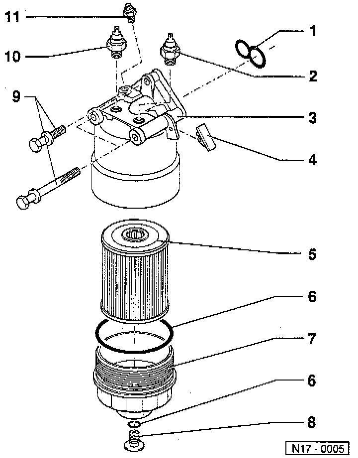

Oil Filter: Diagrams

LEGEND
1 Gasket
2 0.3 bar Oil Pressure Switch
3 Oil Filter Bracket
4 Stop Plate
5 Oil Filter Element
6 O-ring
7 Oil Filter Lower Section
8 Oil Drain Screw
9 Mounting Bolt
10 1.4 bar Oil Pressure Switch
11 Engine Oil Temperature Sensor